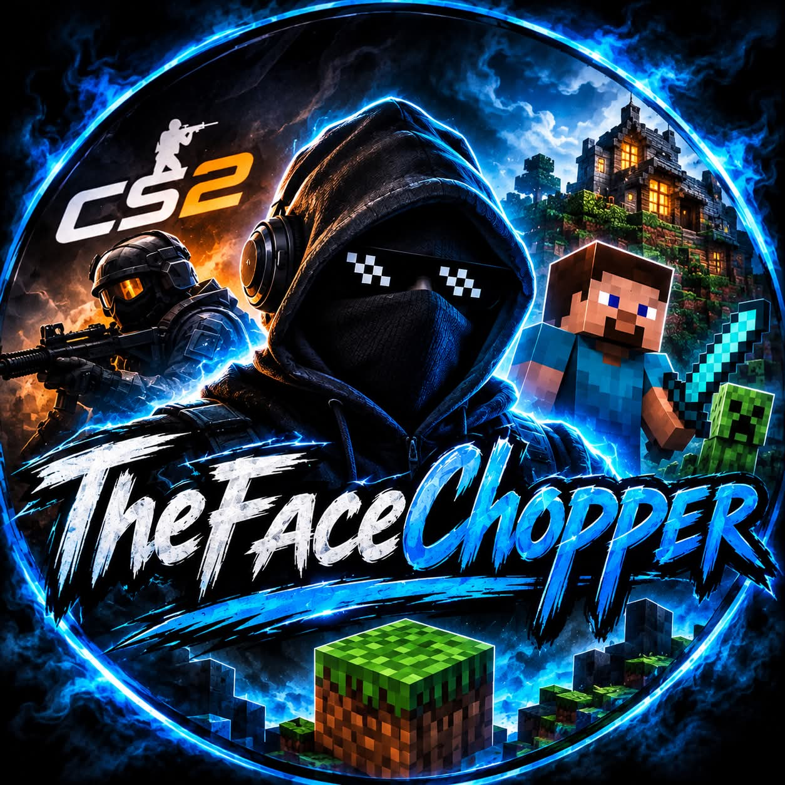

🔫
CS2
Meccsek, clutchok, skinek és minden, ami Counter-Strike.
Sziasztok, TheFaceChopper vagyok! Nálam a CS2, a gaming, a kaszinós témák és a jó közösség találkozik. Kövess be, nézz körül, és csatlakozz a közösséghez – további tartalmak és újdonságok hamarosan!

Játékok, tartalmak és közös pillanatok.
Meccsek, clutchok, skinek és minden, ami Counter-Strike.
Más játékok, közös játék és új kihívások.
Kaszinós tartalmak és beszélgetések. Szerencsejáték csak felelősen, 18+.
TheFaceChopper setupja.
Találkozzunk máshol is
Kövess és csatlakozz a közösséghez!
A YouTube-link később hozzáadható. A kaszinós tartalmak kizárólag 18 éven felülieknek, a helyi jogszabályok betartásával.